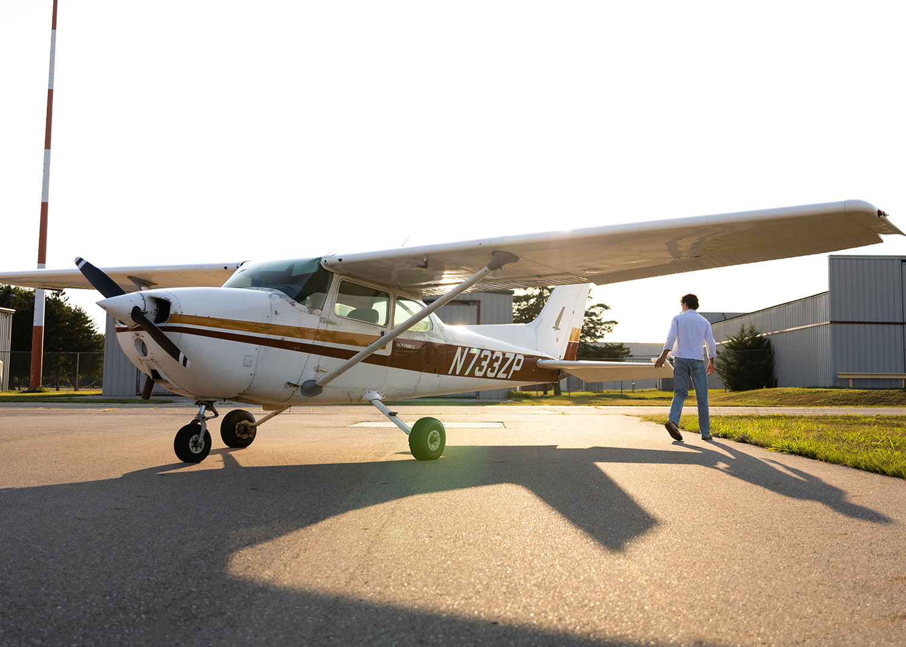

Unscripted
Raw, real, and in the moment.
This section holds my photojournalistic work. The stories that unfold naturally, without direction or pretense. “Unfiltered” speaks to authenticity: truth in movement, emotion in imperfection, and connection in every unposed frame. It’s my way of documenting life as it is.
PHOTOJOURNALISM · Story

